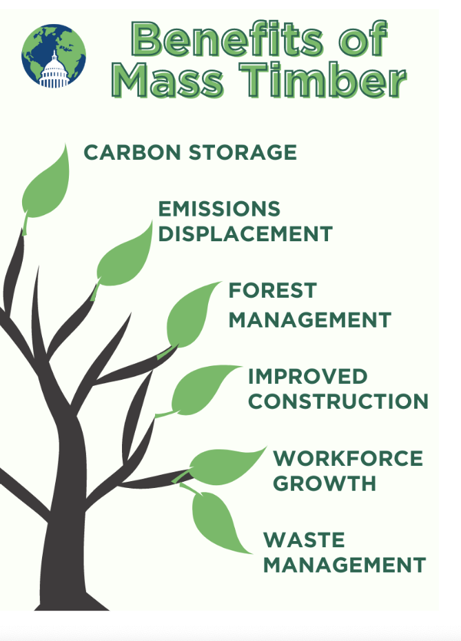

Wood: the Pluses, the (not so much) Minuses, and the Neutrals
Alright, new day new blog. So listen up folks I feel that this is a very important thing to know because we use many variety of wood products. The video is right below.
If y’all don’t want to watch. Let me tell you what I learned from it. So the video starts off with a loaded truck, and then the weighing processes determines the weight of the logs received. After unloaded by the crane, the empty truck returns for a second weighing, making accurate calculations of the logs' weight. And sustainability is their core focus throughout this milling process. (Lesson 13 - Collum’s Lumber Products)
They get laser scanning technology for cutting and slicing wood while waste materials, like bark, are repurposed for industrial fuel. From debarking to sorting, each step is executed with precision which produces high-quality lumber and minimizing waste at the same time. Then, following the drying in the kiln, lumber is good for shipment. Sustainability and quality just intersect so seamlessly, there’s just something nice and satisfying about knowing that you know. (Lesson 13 - Collum’s Lumber Products)
Speaking of which. Another thing I got interested in was the Cross Laminated Timber (CLT). I was looking into some CLT buildings actually because I wanted to see what’s the most recent one and how it looks. There was one structure that stood out: the Ascent, nestled at 700 E Kilbourn Ave, Milwaukee, WI 53202. It was developed by New Land Enterprises, their construction began in 2020 and was completed in 2022. (Urban Milwaukee)
Ascent isn't just a building though it's a fusion of architectural innovation and sustainability, REDEFINING urban living. An impressive height of 284 feet (87 meters labeled the tallest Timber for a reason) and spans 25 stories with 493,000 square feet of space. Now this is a towering symbol of modernity. Get this it’s all TIMBER. Not only aesthetic but also has environmental benefits. AND has 259 apartments, AND a sixth-floor pool, AND a penthouse amenity level. Ascent isn't just a residence at this point; it's an experience, elevating urban living to new heights (pun intended). (Project Ascent)
So far the new things I’ve learned were interesting. But carbon sequestration? Just the other day I had a little convo with somebody about it and you probably know who you are if you’re reading this. But you learn something new every day am I right?
They asked me if I knew that using wood for construction actually helps store carbon and reduce CO2 in the atmosphere. Me: No?... Them: Yeah, so trees absorb carbon dioxide during photosynthesis, which is pretty neat. BUT when we harvest trees for wood products, stored carbon releases back into the atmosphere. SO, while wood construction can temporarily store carbon, we need to think about the whole life cycle of wood products. (Lesson 17)
That means considering everything from extraction to disposal. It's important to know carbon neutrality over time. And when we compare wood to concrete or steel, we have to look at the big picture. Sure, wood has its perks, but sustainable forest management is just as important. If we keep our forests healthy it’ll continue sequestering carbon and supporting ecosystems. End goal fights off climate change a bit. (Lesson 17)
As we conclude our exploration of lumber production and sustainable construction, it's clear we've unearthed some intriguing new knowledge. From Collum’s Lumber Products to Ascent's eco-conscious design. The real eye-opener? Trees, our unsung carbon storage heroes. Wood offers undeniable benefits, sustainable forest management is essential to combat climate change.

Works Cited
- Lesson 13: Forest to Lumber, BBE 1002, UMN, “Collum's Lumber Products, LLC - Sawmill Tour” https://www.youtube.com/watch?v=Q1eWUby71Ew&ab_channel=Collum%27sLumberProducts%2CLLC
- Eyes on Ascent: The World’s Tallest Timber Tower https://www.thinkwood.com/construction-projects/ascent#:~:text=Tim%20Gokhman%2C%20managing%20director%20at,natural%20beauty%20of%20timber%20construction.
- Urban Milwaukee. https://urbanmilwaukee.com/building/ascent/
- Project Ascent. https://www.thorntontomasetti.com/project/ascent#:~:text=The%20Ascent%2C%20in%20Milwaukee's%20East,and%20a%20penthouse%20amenity%20level.
- Lesson 17: Is Wood Good?, BBE 1002, UMN
- Fact Sheet | Building Sustainably: Mass Timber. https://www.eesi.org/papers/view/fact-sheet-building-sustainably-mass-timber-september-2023
All feedstocks, bio-renewables included, have to be sourced from somewhere
We are going to focus on the source of all feedstocks and biorenewables today. Unbeknownst to most, bamboo is more than simply a massive green plant that sways in the wind. Its roots, or rhizomes, are the source of all its energy, making it a pretty good force in the energy department. Bamboo grows in two different ways: called clumping and running. What is that you ask? Clumping is where the bamboo grows tightly together. Running means bamboo spreads out and can take over large areas if not managed. When spring shows up the culms which are the visible stems on bamboo bloom quickly and reach their maximum height in just one growth season. (Bamboo Biology)
But here's where it gets interesting. If you were to decide to give a bamboo a trim, it won't sulk or waste time moping about its missing height. Nope, it's a very determined little fella. So, what happens is that the little cut bamboo will channel its energy like a first Hokage when he channels his chakra for wood-style jutsu into making fresh leaves. These fresh leaves then become these little supporters helping the plant generate more energy, which then travels down to the roots, triggering the growth of new bamboo shoots. Like a crazy green machine, ironic am I right? Haha. (Bamboo Facts) (peep my Naruto reference üëÄ)
Anyhow, bamboo can be found in both the warmer and cooler regions of Asia and South America, with a few in Australia, Africa, and the southern United States. Its biomass composition is probably the envy of other plants. Bamboo is a powerful renewable energy source, why? because of its combination of lignin, hemicellulose, and cellulose. This versatile plant isn't just a pretty face; it's a powerhouse of bioenergy potential. From charcoal to bioethanol and even biogas, bamboo stands tall as a sustainable source for our energy needs. (Bamboo Facts and Bamboo Biomass)
Moving on from the bamboos, let’s talk about the monocultures of tree plantations. I was reading up on an article talking about the controversies of monoculture tree plantation. That’s when I thought not all sourcing of feedstocks and biorenewables have positive impacts. Like a bamboo does. So let’s dive into the bad side specifically with monocultures.
Reading the article made me think these tree plantations come with a baggage of problems. There are lack of water supply which throws off ecosystems on both land and water out of whack. Imagine a deforestation and soil erosion playing tag in the environmental playground, it ain’t a pretty sight. (Negative Impacts)
Socially, it's a community disturbance with native and Afro communities getting uprooted, leading to increased poverty and food security concerns. Not only that the biodiversity takes a hit too, thanks to the single-species planting party. It's like inviting only one type of guest to your party and expecting a diverse and lively crowd. It obvious it’s not happening. (Negative Impacts)
Tree plantations are a source of anxiety despite their reputation for being able to accumulate carbon. Deforestation and the usage of agrochemicals are risks that could lead to the unintentional release of greenhouse gases, aggravating climate change. International targets that encourage the growth of plantations for wood-based bioenergy also make matters worse. Foreign companies frequently seize land as a result of this growth, uprooting local residents and disturbing long-standing farming methods. Like that’s just mean. (Negative Impacts)
Honestly, this article is like the 'Debbie Downer' of articles, it’s got many concerns and issues but also it has it’s biases. So take it with a grain of salt because monoculture tree plantation does have it’s own potential benefits not everything is bad. Just make sure y’all are doing your own research. I want you guys to ruminate about the negatives because not everything is rainbow and cupcakes.
So now with all that said this brings me to the Sustainable Forestry Initiative (SFI) and Forest Stewardship Council (FSC). In the context of bio-renewables and feedstocks, the forestry practices highlight the importance of responsible sourcing and management of natural resources.
In the world of responsible forestry, both SFI and FSC lay down the law, putting limits on clearcut harvest areas and putting the brakes on turning forests into something they're not supposed to be. These limitations are pretty consistent with the idea that, to maintain environmental sustainability, all feedstocks, including biorenewables, should be sourced within defined limits. It's like setting up green traffic lights for Mother Nature. (Difference between)
It gets better, the ethical aspects of feedstock sources are highlighted by the requirement that indigenous people be consulted during the SFI and FSC certification processes. The great awareness that bio-renewables should be obtained while respecting local communities' rights is honestly such a nice a thing.
Here’s actually a grid that I had done whilst researching on SFI and FSC. It shows you the comparative information on SFI and FSC.
 (Differences Between)
(Differences Between)
Both of these groups are not the same but similar they do things they’re own way but their end goal is to promote a sustainable environment. In essence, the insights from SFI and FSC practices underscore the gravity of responsibly sourcing bio-renewables. They remind us that while innovation is essential, it must be balanced with respect for the natural world and a commitment to sustainable practices.
In a nutshell, bamboo’s the cool eco-hero in town, with it’s versatile energy moves. We still have to take into account the risks and issues with monoculture tree plantations, relying and worshiping a hero comes with it’s risks, if we don’t consider the full picture, flaws and all. It’s a reminder that all bio-renewables, like these green energy power-ups, should be sourced responsibly, These are just some things that flew around my head. What are your thoughts on it all?
Work Cited
- Bamboo Biology - Morphology, Structure, and Anatomy https://completebamboo.com/bamboo_anatomy.html
- 8 AMAZING BAMBOO FACTS https://onetreeplanted.org/blogs/stories/bamboo#:~:text=It%20also%20depends%20on%20where,in%20the%20southern%20United%20States
- Bamboo for biomass energy production https://bioresources.cnr.ncsu.edu/resources/bamboo-for-biomass-energy-production/#:~:text=The%20biomass%20structure%20is%20made,hemicelluloses)%20(Karagoz%20et%20al
- Negative impacts of tree plantations ignored by Northern consumer countries. https://globalforestcoalition.org/negative-impacts-tree-plantations-ignored-northern-consumer-countries/
- Differences Between the Forest Stewardship Council (FSC) and Sustainable Forestry Initiative (SFI) Certification Standards for Forest Management https://www.dovetailinc.org/upload/tmp/1581654356.pdf
- Comparing SFI and FSC Certification Standards Providing Better Choices for the Planet https://www.forests.org/wp-content/uploads/Comparing-SFI-and-FSC-Certification-Standards.pdf